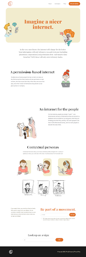

The @ Company Update - February 2020
The @ Company has had another great month! Below is a summary of our progress:
Terminology
We have decided to change the term we use to refer to @handles to @sign. It is lighter, friendlier, and goes better with our domain name of atsign.com
Fundraising
Thanks to our amazing chairman of the board, Kim
Perdikou, our SAFE round is just about done at $2.5M. Thank you to all of our
fabulous investors!
Technology
More great progress on the technology side:
- We now have end-to-end encryption working with the protocol
- We now have a variety of sample apps to show developers how they can implement the components
- We also have push notifications figured out, which will allow surveillance-free peer-to-peer push notifications
Registrar
Our beta registrar site is almost ready to go. We had a delay as we wanted to make sure the design was fun and engaging, and so we brought in an outside designer to turn this vision into reality.
- We have almost 100 reserved @signs already!
- New launch date for beta registrar is March 15
Go to Market
We have fleshed out our go to market strategy and have a more detailed document available. We love input, so please take a look and share your thoughts with us!
Apps in Progress
- The “Find Me” app - a fun way for influencers to share all their social media links in one place under a single brand.
- LifeSite - A digital vault app for sensitive documents, currently selling b-b-c will be extended to work with the @ protocol
- Contacts - peer-to-peer contacts and groups, will be built on the @ protocol
- Julz Vault - An admin needs access to highly sensitive executive’s information. There is no secure, easy way for them to retrieve or keep this data. Sticky notes, storing in their phone contacts (where it could be shared in vcard), handwritten paper lists, or cloud documents are all insecure and easily compromised. A peer-to-peer sharing app, where the exec never loses control of this sensitive data. Juliette Gomez will be promoting the app at their PA awards dinner in March
If you want to reserve your @sign (and Kim hasn’t already reserved it for you) before the beta launch, please let me know!
